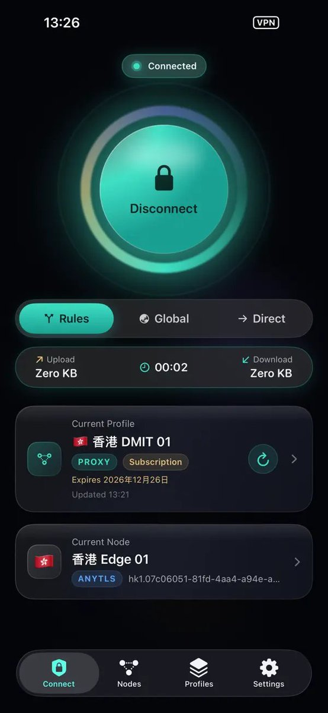
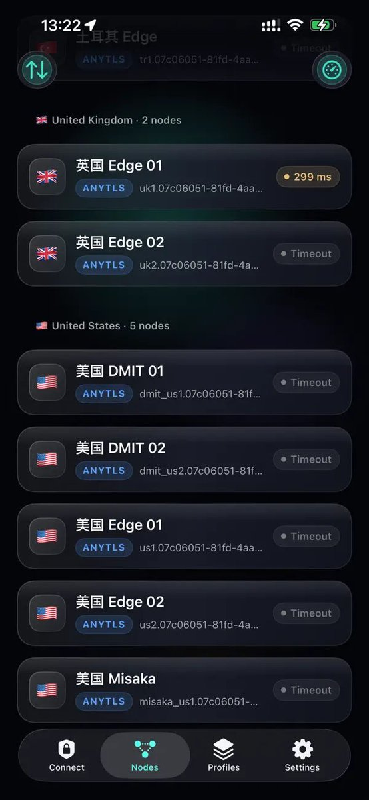
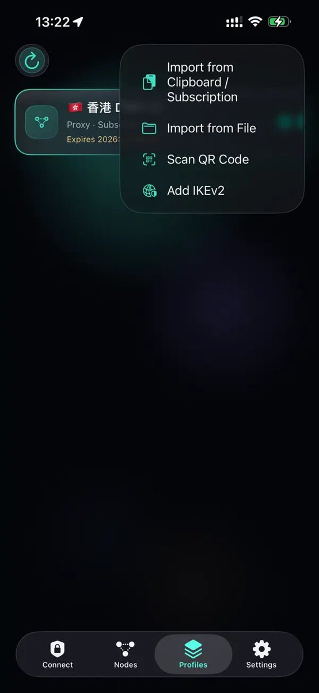
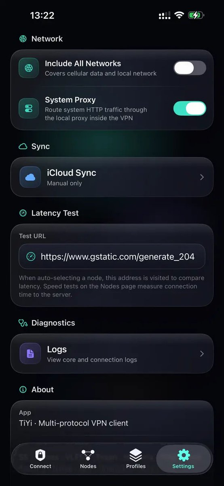
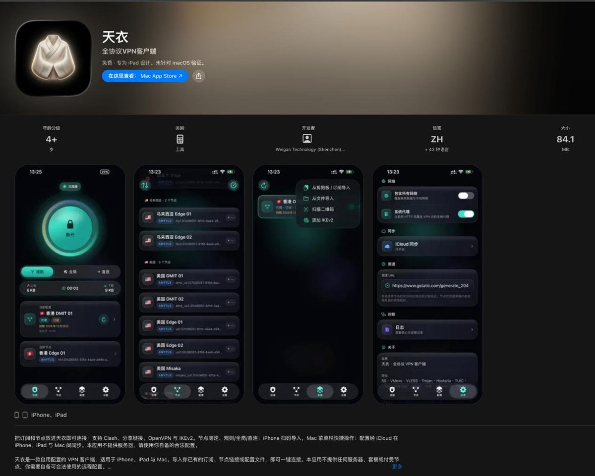
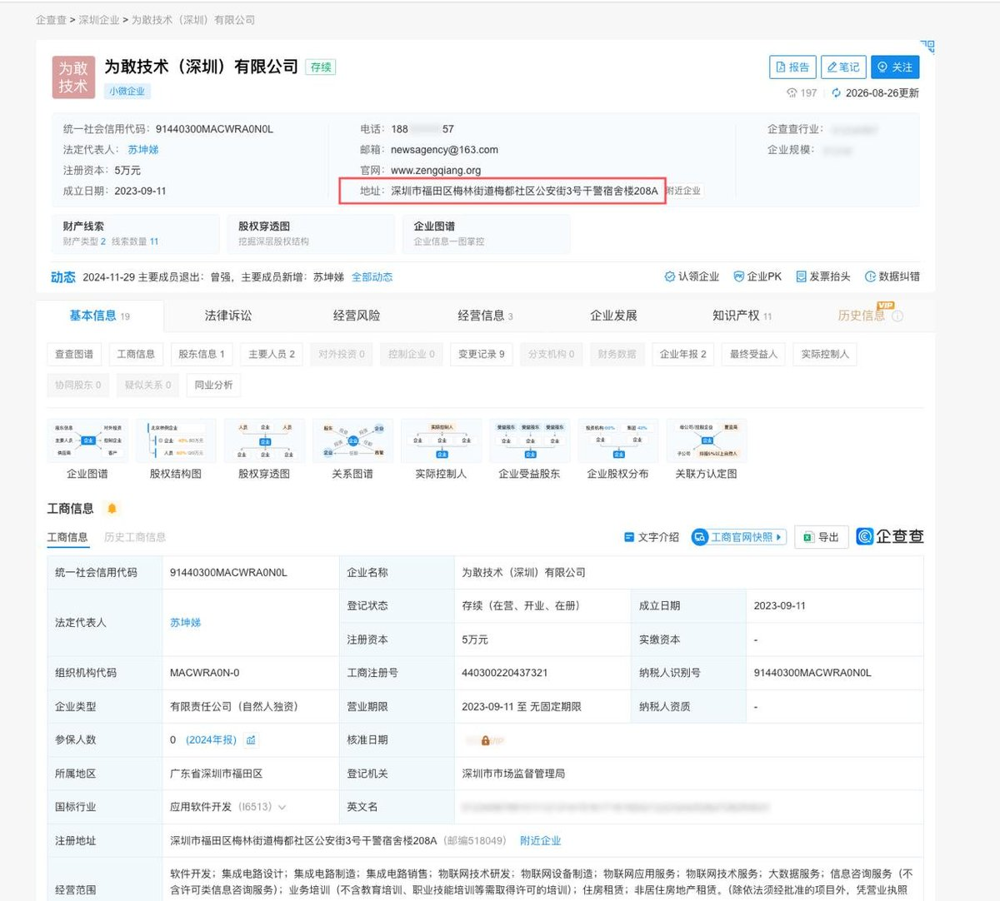

截止目前，天衣App已从国区苹果商店隐藏，已购项目中仍可获取下载，宣传图主要节点为DMIT、Misaka等华人背景IDC提供节点
根据介绍，天衣是一款自用配置的VPN 客户端，适用于iPhone、iPad 与Mac。导入你已有的订阅、节点链接或配置文件，即可一键连接
https://t.co/TDPT1YroOz

根据介绍，天衣是一款自用配置的VPN 客户端，适用于iPhone、iPad 与Mac。导入你已有的订阅、节点链接或配置文件，即可一键连接
https://t.co/TDPT1YroOz






最近国区App Store上架了一款叫“天衣”的VPN客户端，开发者：为敢技术（深圳）有限公司，注册地址：
深圳市福田区梅林街道梅都社区公安街3号干警宿舍楼208A
https://t.co/fOUZuRLmlK https://t.co/gBaM8uglHa
深圳市福田区梅林街道梅都社区公安街3号干警宿舍楼208A
https://t.co/fOUZuRLmlK https://t.co/gBaM8uglHa